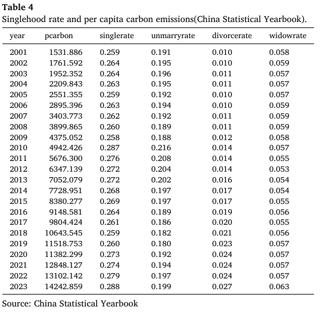

1. 双碳目标与生活排放
文章开篇强调，中国作为全球最大碳排放国，已经提出 2030 年前碳达峰、2060 年前碳中和的“双碳目标”。当工业过程排放因房地产和基建降温而下降时，生活方式和家庭消费端排放会变得更重要。
2030中国承诺 CO2 排放达峰年份
2060中国承诺碳中和年份
8 类家庭消费支出类别用于测算隐含碳排放
42对应的国民经济产业部门
因此，文章不是只看“家庭电表用了多少电”，而是将食品、服装、居住、家庭设备、交通通信、教育文化娱乐、医疗和其他服务背后的产业排放纳入消费端核算。
2. 人口结构变化：家庭小型化与单身化
家庭结构会影响消费组织方式。多人家庭可以共同使用住房、冰箱、洗衣机、燃气灶、取暖设备和汽车；单身家庭则更可能独立承担这些固定消费。即使单身者总消费低于多人家庭，一个人分摊固定能源和固定物品时，人均排放也可能更高。
家庭数量增加
同样人口被拆成更多户，住房、家电和能源使用单位增加。
同样人口被拆成更多户，住房、家电和能源使用单位增加。
家庭规模下降
固定资源不能被多人摊薄，人均能耗和物耗上升。
固定资源不能被多人摊薄，人均能耗和物耗上升。
消费偏好改变
便利、即时和个性化消费可能提升包装、物流和服务排放。
便利、即时和个性化消费可能提升包装、物流和服务排放。
3. 文献分歧：单身户到底高碳还是低碳？
| 研究方向 | 结论倾向 | 可能原因 |
|---|---|---|
| 韩国都市单人户 | 可能降低人均温室气体排放 | 居住空间更小，共享城市设施和公共空间效率较高。 |
| 日本单人户 | 碳足迹可能高于非单人户 | 住房能源、服装、医疗等支出带来更高隐含排放。 |
| 中国电力消费研究 | 单人户比例较高地区可能节省电力 | 研究范围主要限于直接用电，未覆盖非电能源和消费隐含排放。 |
分歧的本质
单身化同时包含两股力量：一方面，小户型和城市公共设施可能降低某些直接能源使用；另一方面，住房、家电、餐饮、物流和交通的“不可共享部分”会提高人均排放。净效应需要具体国家、具体消费体系和具体数据来判断。
4. 中国研究缺口
中国是全球最大碳排放国，也是最大的发展中经济体。相比发达国家，中国在能源结构、城乡基础设施、家庭消费升级、外卖网购普及、住房市场和公共交通等方面具有不同特征。因此，直接套用日韩或欧美结论并不稳妥。
本文的创新主要有两点：第一，用中国 CFPS 家庭微观数据测量单身率对人均消费端碳排放的影响；第二，把机制具体拆成规模经济、便利生活和能源共享三组可检验路径。

5. 本文假设
假设 1
家庭单身率对人均碳排放具有正向影响。
假设 2
家庭单身率通过三条路径提高人均碳排放：减少高价值家庭公共品的规模经济、提高便利导向消费、降低生活能源共享程度。
这两个假设为后续经验策略提供了清晰结构：先估计总体效应，再检验机制，再看哪些单身群体的效应更强。